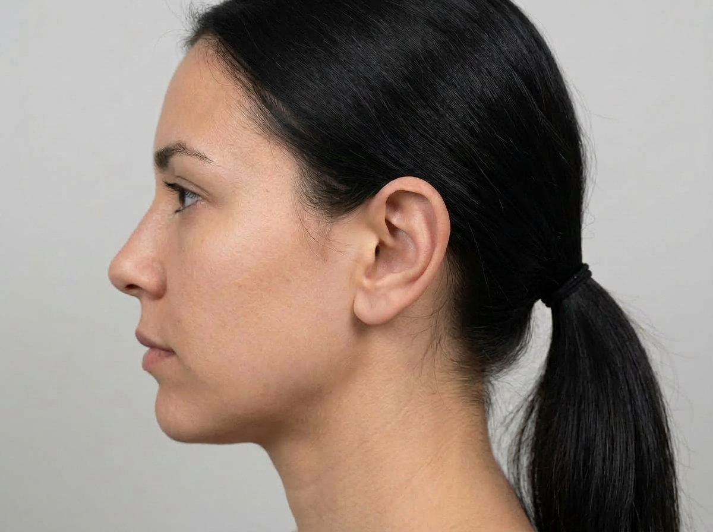
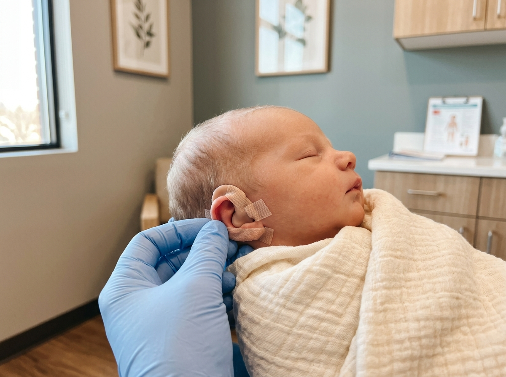
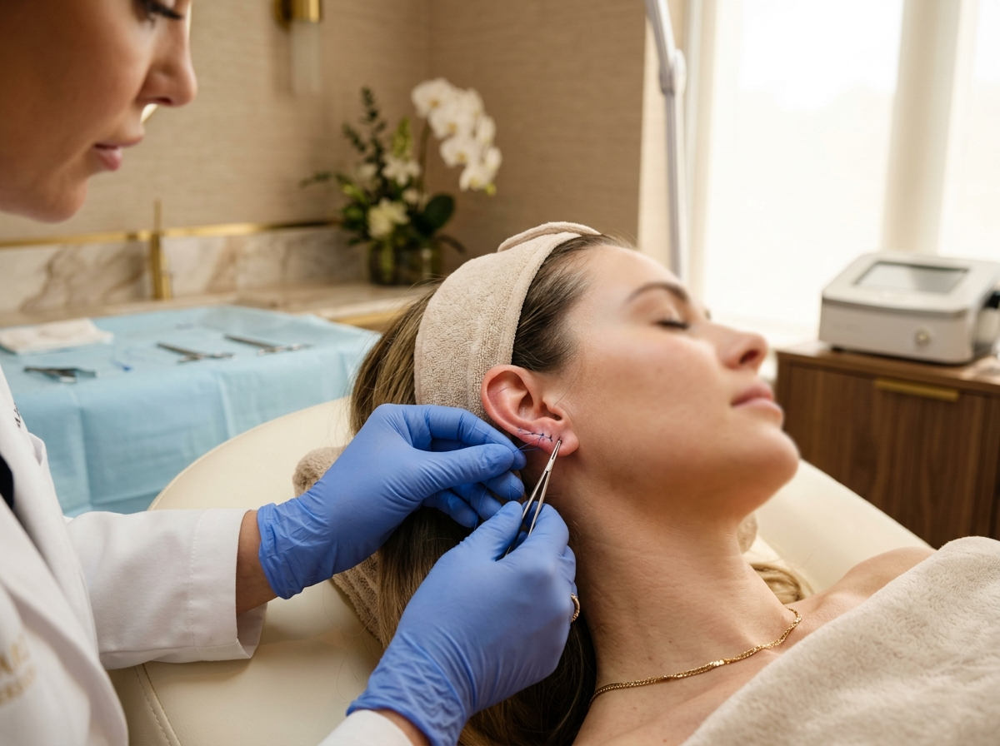

Otomodelação Adulto
Diga adeus à vergonha de tirar fotos ou do vento bater no cabelo. Correção definitiva em consultório sob anestesia local suave, sem internação e sem afastamento do trabalho.
Esqueça o medo da cirurgia tradicional. Com a técnica avançada de fragilização de cartilagem da Dra. Lucy, você corrige orelhas de abano em apenas 1 sessão de consultório, sob anestesia local suave, sem cortes e com retorno imediato à sua rotina.
Experiência e segurança comprovada em centenas de pacientes em Belém/PA.
Sem cortes, sem necessidade de internação e sem afastamento do trabalho.
Procedimento rápido no consultório com anestesia local suave e espelho na hora.
Atendimento acolhedor desde recém-nascidos (Otobaby) até adultos.
Procedimentos minimamente invasivos projetados para proporcionar máxima naturalidade, simetria e conforto anatômico.

Diga adeus à vergonha de tirar fotos ou do vento bater no cabelo. Correção definitiva em consultório sob anestesia local suave, sem internação e sem afastamento do trabalho.
Proteja a infância e a autoestima do seu filho(a). Procedimento acolhedor, rápido e sem traumas para crianças e adolescentes, eliminando de vez piadas e bullying escolar.

A melhor oportunidade nos primeiros meses de vida do bebê. Aproveita a maleabilidade natural da cartilagem neonatal para moldar as orelhinhas de forma 100% indolor e sem cirurgia.

Restaure o formato e a firmeza de lóbulos rasgados pelo peso de brincos ou alargadores. Volte a usar suas joias e brincos preferidos com sustentação e acabamento impecável.
Um atendimento humanizado, acolhedor e sem burocracia do primeiro contato ao espelho.
Responda 2 perguntas simples no formulário online para entendermos o perfil do paciente e o objetivo desejado.
Nossa equipe recebe suas respostas formatadas e apresenta a disponibilidade na agenda privativa da Dra. Lucy.
Procedimento realizado em consultório com anestesia local suave. Você sai da clínica já contemplando suas novas orelhas.
Tudo o que você precisa saber sobre a Otomodelação sem cirurgia.
Não! O procedimento é 100% não-cirúrgico, realizado no próprio consultório com anestesia local suave (a mesma de procedimentos odontológicos). O paciente não sente dor durante a sessão e retorna para casa no mesmo momento, sem internação.
Não, porque a Dra. Lucy utiliza a técnica de fragilização da cartilagem associada aos fios de sustentação específicos. Esse método quebra a memória elástica da cartilagem, garantindo que a orelha permaneça permanentemente na posição anatômica correta.
Atendemos desde recém-nascidos através do protocolo Otobaby (ideal até cerca de 6 meses, enquanto a cartilagem é muito maleável), crianças a partir de 6 a 7 anos (quando a orelha atinge desenvolvimento) até adultos de qualquer idade.
A sessão dura em média entre 1h e 1h30 para ambas as orelhas. O retorno às atividades cotidianas e ao trabalho é imediato ou no dia seguinte, necessitando apenas de cuidados simples de higienização e uso da faixinha protetora ao dormir nos primeiros dias.
A Bella Estética está situada em Belém/PA em espaço clínico privativo de alto padrão, garantindo total conforto, biossegurança e discrição para acolher você e sua família.